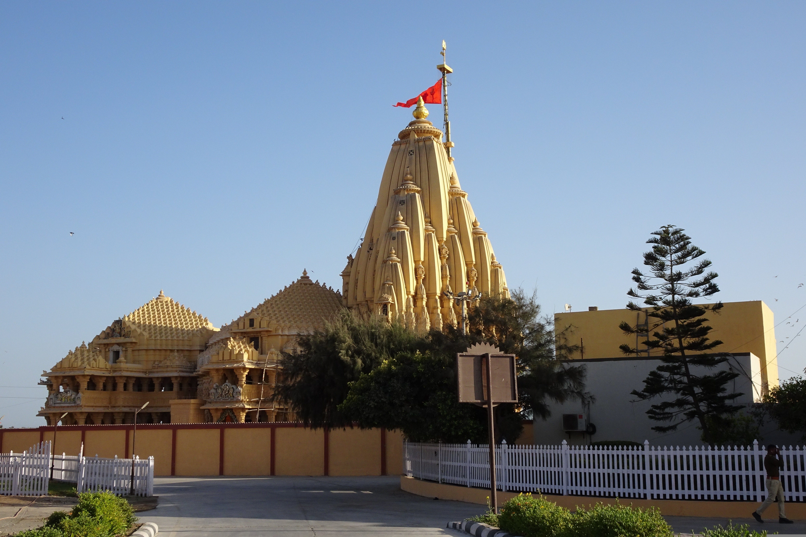

Gujarat
Gujarat, a state on the western coast of India, is known for its rich cultural heritage, historical landmarks, and vibrant festivals.

Rann of Kutch
The Rann of Kutch is famous for the Rann Utsav, a vibrant cultural festival that showcases the art, craft, and music of Gujarat.

Somnath Temple
Somnath Temple, one of the 12 Jyotirlingas of Lord Shiva, is a significant pilgrimage site in Gujarat.
1. Popular Tourist Attractions
Historical and Cultural Landmarks
- Rann of Kutch: Known for the Rann Utsav, this vast salt marsh hosts a spectacular cultural festival with folk dances, crafts, and music.
- Somnath Temple: A famous pilgrimage site and one of the 12 Jyotirlingas, it holds a significant place in Hindu mythology.
- Gir National Park: The only home to the Asiatic lions, this park is a must-visit for wildlife enthusiasts.
Temples and Religious Sites
- Dwarkadhish Temple: Located in Dwarka, this temple is dedicated to Lord Krishna and is one of the Char Dham pilgrimage sites.
- Akshardham Temple (Gandhinagar): A grand temple complex showcasing the culture and spirituality of India.
- Sun Temple (Modhera): An ancient temple dedicated to the Sun God, renowned for its architectural beauty and intricate carvings.
Natural Beauty and Beaches
- Gulf of Kutch: Famous for its scenic beauty, bird sanctuaries, and coral reefs, it’s a great spot for nature lovers.
- Daman and Diu: Located along the Arabian Sea, these coastal areas are known for their beautiful beaches and Portuguese colonial architecture.
- Mandvi Beach: A peaceful beach offering scenic views of the Arabian Sea, perfect for relaxation and water sports.
Royal Palaces and Forts
- Junagadh Fort: A historical fort in Junagadh offering a glimpse into the region's rich heritage and architecture.
- Uparkot Fort: A historic fort located in the city of Junagadh, known for its ancient ruins and step wells.
2. Cuisine
- Khichdi: A comforting dish made from rice and lentils, often served with yogurt and pickle.
- Dhokla: A steamed savory snack made from fermented rice and chickpea flour, often served as breakfast.
- Khandvi: A savory snack made from gram flour, rolled into thin layers, and garnished with mustard seeds and coriander.
- Farsan: A variety of fried snacks, including Gathiya and Bhajiya, popular throughout Gujarat.
3. Festivals
- Navratri: Gujarat’s most famous festival, celebrating the worship of Goddess Durga with traditional dances like Garba and Dandiya.
- Rath Yatra (Ahmedabad): A grand procession held in Ahmedabad, where Lord Jagannath’s chariot is taken through the streets.
- Kite Festival (Uttarayan): Held in January, this festival celebrates the flying of colorful kites, especially in Ahmedabad.
- Diwali: Celebrated with grand enthusiasm across Gujarat, with special sweets, decorations, and fireworks.
4. Unique Experiences
- Rann Utsav: A cultural festival held in the Rann of Kutch that celebrates the vibrant traditions, music, and dance of Gujarat.
- Wildlife Safari in Gir: A thrilling safari to spot Asiatic lions in their natural habitat.
- Shopping in Ahmedabad: Known for its traditional textiles, handicrafts, and the famous Bandhej (tie-dye) fabric.